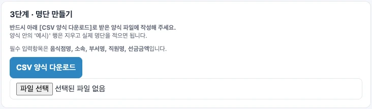
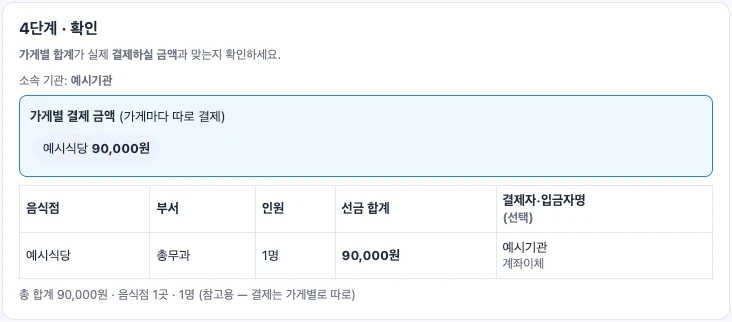

공공기관 담당자(서무) 안내
명단 보내기
받을 가게를 고르고, 직원 이름과 선금을 보내요.
결제는 음식점에 따로 해주세요.
받을 가게를 고르고 명단을 만들어요
기관 이메일로 인증해요
담당자 웹에서 이메일 입력 → [인증번호 받기] → 메일로 받은 6자리 입력 → [확인]. 처음에는 약관 동의가 필요해요.
소속 기관과 음식점을 골라요
시·도, 기관, 우리 부서를 입력하고 이번에 보낼 음식점을 선택해요.
가게 확인번호를 맞춰 봐요
[가게 열쇠 지문 확인]에서는 사장님과 통화해 표시된 문자·숫자가 같은지 맞춰 봐요. 다르면 보내지 말고 먼저 확인하세요.
양식에 적고 파일을 선택해요
[CSV 양식 다운로드] → 엑셀에서 예시 행을 지우고 작성 → CSV로 저장 → [파일 선택]. 제목 행은 바꾸지 않아요.

가게별 금액을 확인하고 보내요
음식점·부서·인원·선금 합계를 확인해요. 결제할 금액은 아래 예시처럼 가게별로 맞춰 주세요.

빠진 음식점이 없는지 봐요
‘이번에 보내지 않는 음식점’이 나오면 이유를 확인해요. 보내야 할 가게라면 선택이나 명단을 고쳐요.
[바로 보내기]를 골라요
[동의 확인 후 바로 보내기]를 누르고 개인정보 제공 동의를 확인해 전송해요. 파일·QR이 필요할 때만 [직접 전달]을 선택해요.
사장님에게 장부 반영을 확인해요
전송 결과를 보관하고 사장님께 알려주세요. 사장님이 실제 결제를 확인하고 승인해야 장부에 반영돼요. 끝나면 [인증 해제]를 눌러요.
명단 원본과 전달 파일은 개인정보가 담긴 업무 자료예요. 공개 게시판·공용 단체방에 올리지 마세요.